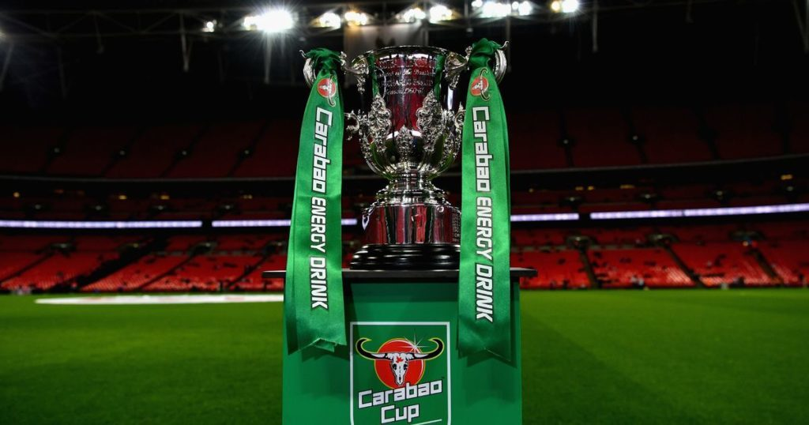

La Carabao Cup es la copa de la liga de Inglaterra, se inicio en 1960 y llevo varios nombres a lo largo de los años, EFL cup es uno de los mas conocidos
| EQUIPO | COPAS |
|---|---|
| Liverpool | 9 |
| Manchester City | 8 |
| Manchester United | 6 |
| Aston Villa | 5 |
| Chelsea | 5 |
| Tottenham | 4 |
| Nottingham Forest | 4 |
| Leicester City | 3 |
| Arsenal | 2 |
| Norwich | 2 |
| Birmingham | 2 |
| Wolverhampton | 2 |
| West Bromwich | 1 |
| Middlesbrough | 1 |
| QPR | 1 |
| Leeds United | 1 |
| Stoke City | 1 |
| Luton Town | 1 |
| Sheffield Wednesday | 1 |
| Swindon Town | 1 |
| Oxford United | 2 |
| Swansea City | 1 |
| Blackburn Rovers | 1 |
| AÑO | EQUIPO |
|---|---|
| 2022/23 | Manchester United (6) |
| 2021/22 | Liverpool (9) |
| 2020/21 | Manchester City (8) |
| 2019/20 | Manchester City (7) |
| 2018/19 | Manchester City (6) |
| 2017/18 | Manchester City (5) |
| 2016/17 | Manchester United (5) |
| 2015/16 | Manchester City (4) |
| 2014/15 | Chelsea (5) |
| 2013/14 | Manchester City (3) |
| 2012/13 | Swansea City (1) |
| 2011/12 | Liverpool (8) |
| 2010/11 | Birmingham (2) |
| 2009/10 | Manchester United (4) |
| 2008/09 | Manchester United (3) |
| 2007/08 | Tottenham (4) |
| 2006/07 | Chelsea (4) |
| 2005/06 | Manchester United (2) |
| 2004/05 | Chelsea (3) |
| 2003/04 | Middlesbrough (1) |
| 2002/03 | Liverpool (7) |
| 2001/02 | Blackburn Rovers (1) |
| 2000/01 | Liverpool (6) |
| 1999/00 | Leicester City (3) |
| 1998/99 | Tottenham (3) |
| 1997/98 | Chelsea (2) |
| 1996/97 | Leicester City (2) |
| 1995/96 | Aston Villa (5) |
| 1994/95 | Liverpool (5) |
| 1993/94 | Aston Villa (4) |
| 1992/93 | Arsenal (2) |
| 1991/92 | Manchester United (1) |
| 1990/91 | Sheffield Wednesday (1) |
| 1989/90 | Nottingham Forest (4) |
| 1988/89 | Nottingham Forest (3) |
| 1987/88 | Luton Town (1) |
| 1986/87 | Arsenal (1) |
| 1985/86 | Oxford United (1) |
| 1984/85 | Norwich (2) |
| 1983/84 | Liverpool (4) |
| 1982/83 | Liverpool (3) |
| 1981/82 | Liverpool (2) |
| 1980/81 | Liverpool (1) |
| 1979/80 | Wolverhampton (2) |
| 1978/79 | Nottingham Forest (2) |
| 1977/78 | Nottingham Forest (1) |
| 1976/77 | Aston Villa (3) |
| 1975/76 | Manchester City (2) |
| 1974/75 | Aston Villa (2) |
| 1973/74 | Wolverhampton (1) |
| 1972/73 | Tottenham (2) |
| 1971/72 | Stoke City (1) |
| 1970/71 | Tottenham (1) |
| 1969/70 | Manchester City (1) |
| 1968/69 | Swindon Town (1) |
| 1967/68 | Leeds United (1) |
| 1966/67 | QPR (1) |
| 1965/66 | Westc Bromwich (1) |
| 1964/65 | Chelsea (1) |
| 1963/64 | Leicester City (1) |
| 1962/63 | Birmingham (1) |
| 1961/62 | Norwich (1) |
| 1960/61 | Aston Villa (1) |